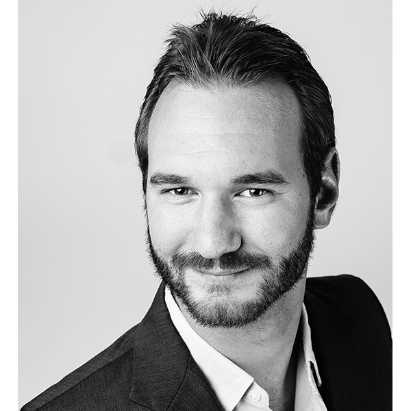

So what is inclusion?
Inclusion is the state of being denied by equality. Equality by means that they are not that accpected by society by thier looks, apprerance and disabilities. Having such Inequalities, they have thier own talents that even normal person can't have. There's this person who inspires people with disablities in a huge way.

His name is Nick Vujicic who with such disability having now a beautiful life full of happiness. Nick Says that God can use a life without limbs
to show the world how to live a life without limits!
So don't let your self steem put you down,
you just need to say to all the peaple of the world the God also created you as they are, that God treats us qually and uses us in Good deeds.
Nick also says "for every disability you have, you are blessed with more than enough abilities to overcome your challenges."
What about your disablity if as much as you want you can do the things you love the most? Is having that disability can't let you do things that you want?
Maybe this thing you want isn't suited for you? Maybe their's something out there that is for you but you're just afraid to try things out?
Know more about Nick Vujicic, just visit thier website here at: https://www.lifewithoutlimbs.org/
Inclusion in Camp John Hay
People with disabilities find it hard to speak for themselves because of what they they tend to think that they are not part of the group,
So they just listen to what others think and they just omit theirselves to society.
Persons with Disabilities(PWD) are peaople who at most are'nt enjoying their lives that much because of their disability.
just what if we organize some events that they can attend even just a small scale events for them.
And for those who can go anywhere despite having difficulties,
you or your family can visit places such as Camp John Hay, Baguio City for recreational activities,
having time with your families and friends, dining together,
many more activites that a person can do even having such disability.
this place supports those people with disabilities(PWDs) or thier senior citizens.
They have places for them and thir families to bond and have fun even with those disability.
Advocacy is key to challenge barriers to inclusion and improve policy,
environmental and attitudinal factors so people with disabilities are fully supported, enabled,
included and empowered to participate fully on an equal basis in society.